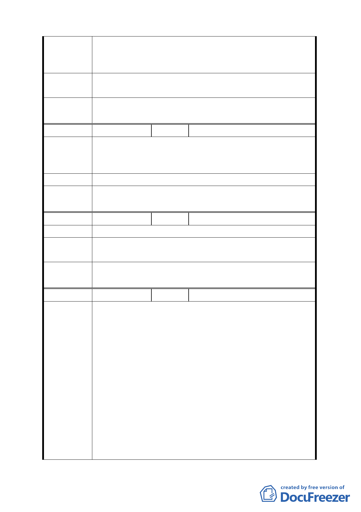

陳情位置：北投區行義段一小段 66 地號
陳情理由 行義路為溫泉專用區，所以要多樣化，可當旅社、泡湯、養
生飲食。
建議辦法
一、希望原有 10.5 公尺高度放寬 18 公尺高度。
二、開放設置地下停車場。
委員會議
決議
同編號 1。
編號
７ 陳情人 陳進治
陳情位置：北投區泉源段 1 小段 298 地號
陳情理由 上址係磺溪上游一帶為溫泉水源頭亟待相關單位重視及輔
導。
建議辦法 請納入溫泉產業特定專用區內。
委員會議
決議
同編號 1。
編號
８ 陳情人 何智銘
陳情理由 依目前計畫範圍看來根本無法應付遊客及車量。
建議辦法
擴大計畫範圍將規劃範圍一起納入開發利用，創造國際級觀
光區。
委員會議
決議
同編號 1。
編號
９ 陳情人 何錫賢
一、初看計畫區範圍奇形怪狀，讓人對政府的德政就地合法
的美意印象深刻。並為屢遭拆除困擾的業者，終於有能
光明正大經營的一線曙光出現。然而綜觀種種規範，及
法規限制，業者若想順順利利完成手續恐非易事，而且
範圍也太小，無法創造更大的商機。
二、行義路沿線至今仍保有這麼大塊的保護區（規劃區），
陳情理由
既然要利用得天獨厚的溫泉資源，考慮有限的水資源分
配，所以只著手開發計畫區實在格局太小，綜觀台北、
烏來、新店、鶯歌、淡水…，整體開發多麼讓人賞心悅
目，反觀我們身為臺北市的首都計畫（休閒、觀光）是
如此的保守，實在是深感不解，如果可能的話，是否將
全部的保護區（規劃區）一併納入開發。不一定叫溫泉
區可以用休閒休憩觀光區（開放休閒農場或），當然一
8